挑戦の一歩目
やりたいことが、
だから、動いてみる。
挑戦の一歩目は、
議員インターンシップ 参加者募集|春休み2027
2ヶ月、議員の隣で社会を見る。
語れる自分に変わる。
参加するかは、説明会のあとで決めてOK。
やりたいことが、
だから、動いてみる。
挑戦の一歩目は、
Numbers
これまでに参加した学生
のべ49,221名
受け入れた議員事務所
のべ3,083事務所
大使館・NPO等
1,355機関
全国の拠点
35拠点
運営する大学生スタッフ
約550人
参加者の満足度
85%
※ 学生・議員事務所・機関の数は2026年3月31日現在。
※ 満足度は参加者へのアンケートより。
1〜2年生で、9割以上。
1年生 57%/2年生 37%/3年生 5%/4年生 1%
※ 58期 三重支部 説明会資料より。
What you do
議員の事務所で、スタッフの一員として働きます。
たとえば、こんな6つの活動があります。
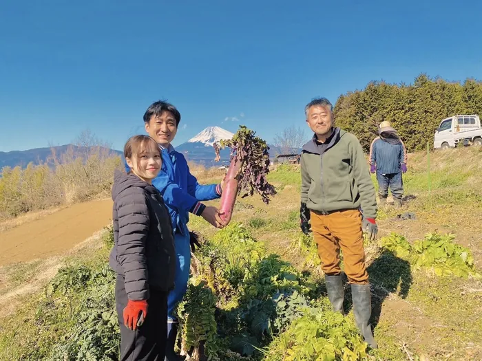
01
地域に出て、まちの現場を自分の目で見る。
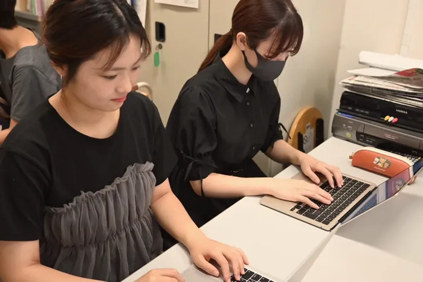
02
活動を、ことばと写真で発信する。
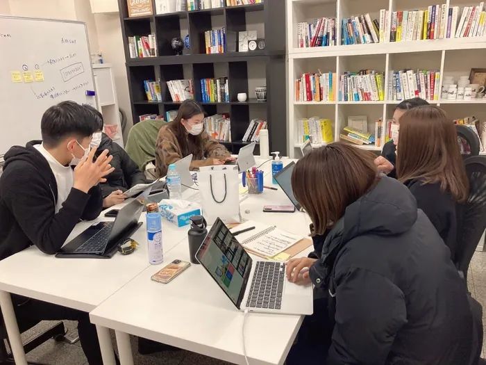
03
知らないことは、ここで学べばいい。
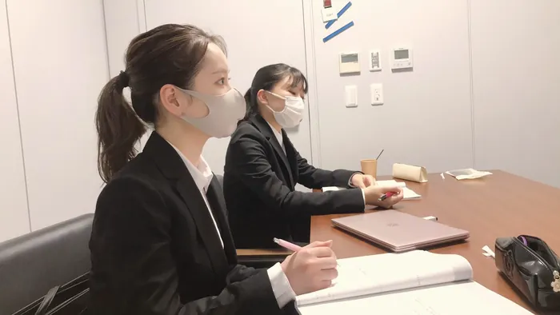
04
事務所の仕事を、内側から支える。
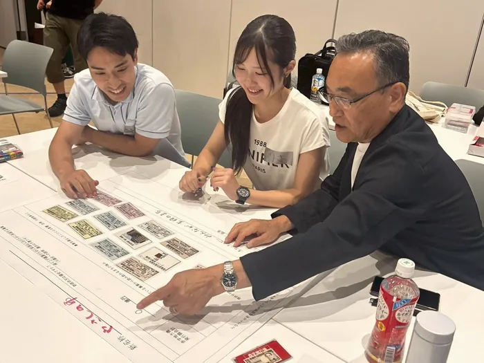
05
調べて、まとめて、根拠をつくる。
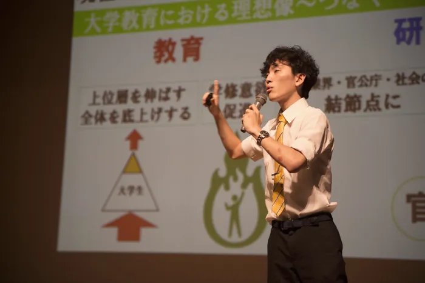
06
「もし自分が首長だったら」を、チームで考えて発表する。
活動は春休み中に100時間以上(目安は週平均2日程度)。参加できる曜日を提出できるので、アルバイトとも両立できます。
| 月 | 火 | 水 | 木 | 金 | 土 | 日 |
|---|---|---|---|---|---|---|
| インターン | アルバイト | 自由 | インターン | アルバイト | 自由 | 自由 |
活動時間の例
合計 116時間
※ 曜日の組み合わせはイメージです。活動時間の例は58期 三重支部 説明会資料より。
2 months
専任スタッフ(大学生)が、一人ひとりを個別にサポート。
マナー研修があり、保険も完備しています。
1月
いっしょに参加する仲間と出会い、スタートを切る。
2月1日〜
議員事務所でのインターンが始まる。
2月下旬
折り返し地点で、ここまでをふり返る。
「もし自分が首長だったら」をテーマに、チームで政策を考えて発表する。
3月下旬
2ヶ月で見たこと・考えたことを、自分のことばで。
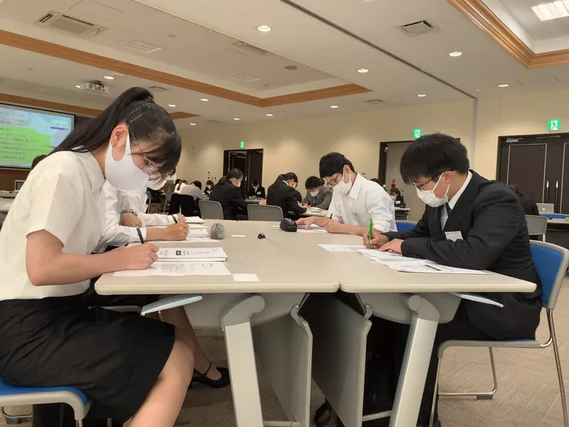
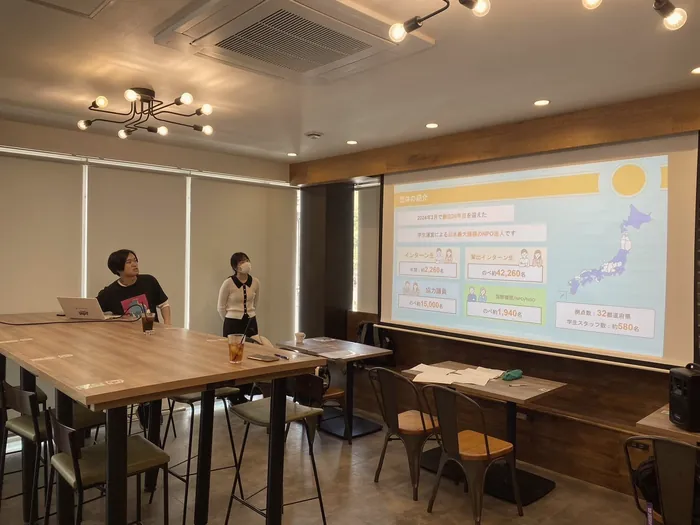
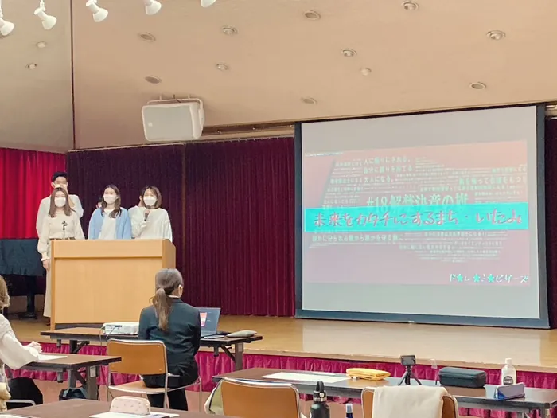
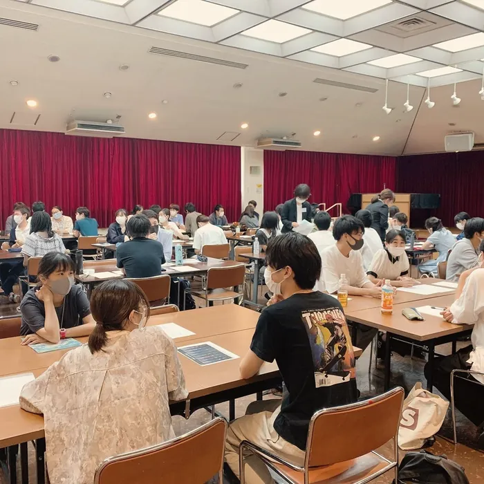
※ 写真は過去の研修・イベントの様子です。
Q&A
なりません。ドットジェイピーは、特定の政党を支持しない中立の団体です。インターン生を受け入れているのは、さまざまな政党の議員です。
大丈夫です。参加する人のほとんどが、未経験・知識ゼロからのスタートです。大学1〜2年生から参加でき、マナー研修や専任スタッフ(大学生)による個別サポートもあります。
できます。活動は長期休暇中で、100時間以上(目安は週平均2日程度)。参加できる曜日を提出できるので、アルバイトとも両立できます。
説明会は無料です。参加する場合にかかるのは、選考会費 3,000円(税込)と、プログラム参加費 26,000円(税込)の2つです。費用と条件を見る
いいえ。参加するかどうかは、説明会のあとで決めてかまいません。まずは話を聞くだけでも大丈夫です。
オンラインの説明会もあります。日程は申込フォームで確認できます。
18〜29歳の大学生・大学院生が対象です。大学1〜2年生から参加できます。
Cost
説明会
0円
無料。話を聞くだけでもOK。
選考会費
3,000円(税込)
説明会のあと、参加を決めた人だけ。
プログラム参加費
26,000円(税込)
2ヶ月のインターンプログラムに参加する費用。
Schedule
10月〜12月中旬
無料。まずは話を聞く。
日程は申込フォームで確認できます。
12月〜1月
1次は面接・希望調査、2次は受入先との面談。
1月
仲間と出会い、準備を整える。
2月〜3月
2月1日〜3月31日。3月下旬に最終報告会。
Other programs
About us
NPO法人ドットジェイピーは、1998年に創業し、2000年に法人を設立しました。全国35拠点・約550人の大学生スタッフが運営しています。
私たちは、特定の政党を支持しない中立の団体です。インターン生は、さまざまな政党の議員の事務所で受け入れられています。
「私もできる」を、私達がつくる。
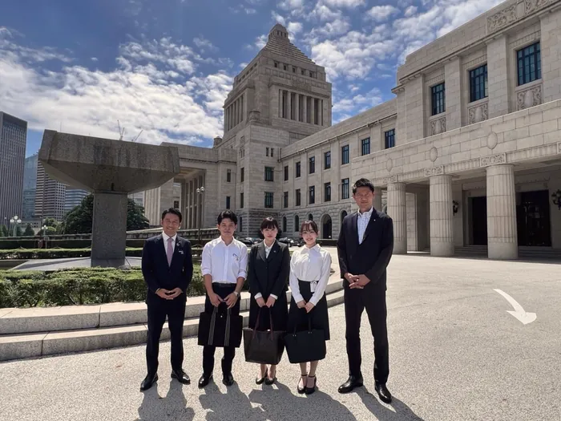
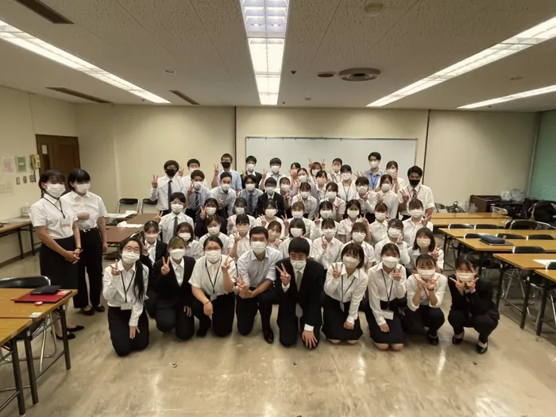
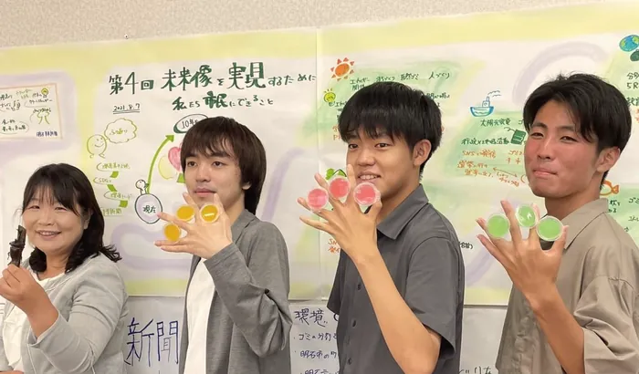